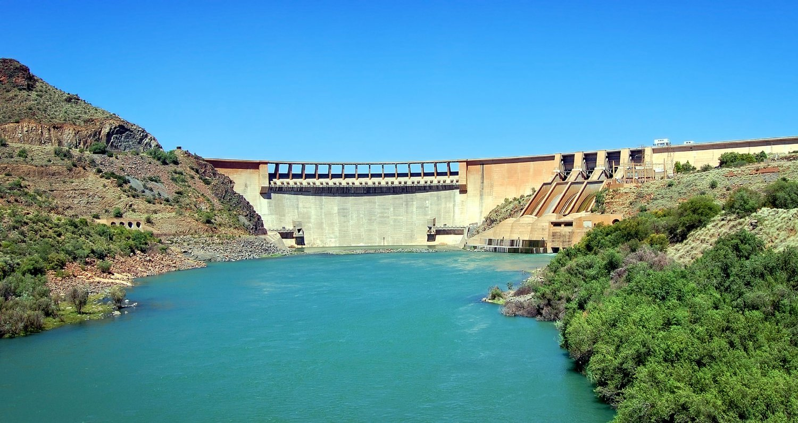

From the Seven Forks cascade to community-scale run-of-river schemes, hydropower remains the backbone of Kenya's electricity system - delivering reliable, dispatchable renewable energy around the clock.
Hydropower captures the energy of water moving from higher to lower elevations, converting gravitational potential energy into electricity through turbines coupled to generators. The technology encompasses a broad spectrum of project types. Large dam projects with reservoirs store vast quantities of water, providing multi-season storage that can dispatch power on demand - these are the workhorses of many national grids, capable of supplying hundreds of megawatts of firm capacity. Run-of-river projects, by contrast, divert a portion of a river's flow through a turbine without significant impoundment, offering lower environmental impact but greater sensitivity to seasonal flow variations. Each configuration carries distinct trade-offs among capacity, cost, environmental footprint, and operational flexibility.
Kenya's hydropower potential is concentrated along the Tana River basin, the Athi River system, and the numerous rivers draining the Aberdare Range and Mount Kenya. The Seven Forks cascade on the Tana River - comprising Masinga, Kamburu, Gitaru, Kindaruma, and Kiambere - has been the backbone of Kenya's electricity system since the 1970s, with a combined installed capacity exceeding 500 MW. More recently, run-of-river projects on the Sondu Miriu and Turkwel rivers have added capacity while demonstrating lower reservoir footprints. Our involvement in Kenya's hydro sector includes hydrological assessments for new run-of-river schemes in Nandi and Murang'a counties, feasibility studies for small hydro projects capable of powering tea factories and agro-processing hubs, and technical audits of existing plants.
Hydropower's unique characteristics make it an indispensable component of a balanced renewable energy portfolio.
Unlike solar and wind, hydropower can be called upon when needed - providing firm, dispatchable electricity that stabilises the grid. Reservoir hydro offers multi-season storage, while run-of-river plants deliver predictable baseload generation. This flexibility is increasingly valuable as Kenya integrates more variable renewable energy sources.
Well-designed hydropower plants operate for 50 to 100 years - far outlasting other renewable energy technologies. The Seven Forks dams, built in the 1970s and 1980s, continue to generate reliably today with proper maintenance. This long operational life creates outstanding lifecycle value and stable electricity prices for decades.
Hydropower projects often deliver far more than electricity. Multi-purpose dams provide irrigation water, municipal water supply, flood control, and recreation amenities. Well-designed projects - with proper environmental and social safeguards - create lasting value for entire river basins and the communities that depend on them.
Our hydropower practice spans the full spectrum, from large multi-purpose dams to community-scale installations that transform rural livelihoods.
Environmentally-sensitive projects that harness river flows without large reservoirs, ideal for Kenya's highland catchments with reliable year-round gradients and minimal ecological disruption.
Large-scale projects combining electricity generation with irrigation, water supply, and flood management - designed with rigorous environmental and social impact mitigation measures.
Community-scale plants from 10 kW to 1 MW serving off-grid populations, powering schools, clinics, agro-processing, and homes with reliable 24-hour electricity.
Upgrading ageing turbines, control systems, and civil infrastructure to improve efficiency, restore lost capacity, enhance safety, and extend operational life by decades.
Designing for extreme hydrology under changing rainfall patterns, incorporating sediment bypass systems, environmental flow releases, and adaptive operational protocols for long-term sustainability.
Responsible hydropower development requires deep hydrological expertise, environmental stewardship, and genuine community partnership.
Comprehensive analysis of catchment hydrology, river flow records, rainfall patterns, and climate projections. Our assessments incorporate at least 20 years of historical data and probabilistic modelling for future climate scenarios.
Matching turbine type (Pelton, Francis, Kaplan, or cross-flow) to site-specific head and flow characteristics. Civil works design optimised for local geology, seismic conditions, and constructability in remote terrain.
Rigorous environmental and social impact assessments addressing river ecology, sediment management, fish passage, water quality, and downstream flows. Design incorporates mitigation measures from day one, not as an afterthought.
Early engagement with riparian communities, transparent resettlement frameworks where needed, local employment and training, and benefit-sharing mechanisms that ensure host communities are genuine partners in project success.
Hydropower has been the foundation of Kenya's electricity system for over five decades.
Whether you are assessing a run-of-river opportunity, planning a multi-purpose dam, or seeking to rehabilitate an ageing plant - our hydropower team brings decades of combined experience in hydrology, engineering, environmental management, and community engagement.
Start Your Hydro Assessment